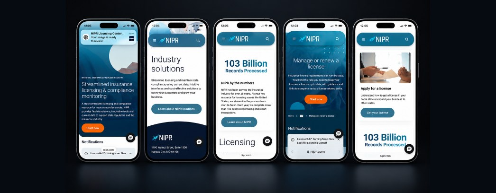

NIPR · Enterprise product
Fourteen screens,
one experience.
Insurance licensing for every producer in the United States, rebuilt around the person doing the task instead of the system storing the data.
The challenge
A single task could mean fourteen open windows.
The system held everything it needed to. The user had to assemble the experience themselves — remembering what was done, what came next, and how any of it connected.
The original experience, reconstructed — fourteen windows for one licensing task.
01 · Understanding the problem
Before we could simplify it, we had to inventory all of it.
Every page, component, form, status and repeated pattern — catalogued, then interrogated with the client's own designers and developers in Sketchin Sessions™.
Board 01 Inventory → questions → opportunity areas
Representative reconstruction of the working boards from this engagement.
02 · Making sense of complexity
The company's structure shouldn't become the customer's navigation.
The old architecture mirrored internal systems. The new one follows the order a person actually needs information.
Scroll to compare →
03 · Exploration
Thinking through making.
Sequence, density and disclosure explored in grayscale before any interface decisions were made.
04 · The unified task
One task. One sequence. Progress you can see.
Scroll the flow →
05 · One product, one language
Consistency became a form of simplification.
Reusable patterns spanning the public site and the licensing application, so navigation logic never changes between workflows.
Palette
Institutional blue · neutral ground
Type scale
Licensing
Body copy at a readable measure
Label / meta / 12px
Status system
One vocabulary, every workflow
Core components
Representative reconstruction of the pattern set.
06 · The final experience
Guided, not fragmented.

Impact
The cognitive burden moved off the user and into the product. The licensing process is still complex. Using NIPR doesn't have to be.
Next project
SAG-AFTRA —
residuals, made understandable.